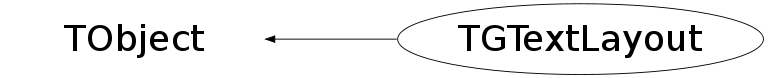

class TGTextLayout: public TObject
TGFont and TGFontPool Encapsulate fonts used in the GUI system. TGFontPool provides a pool of fonts. TGTextLayout is used to keep track of string measurement information when using the text layout facilities. It can be displayed with respect to any origin.
Function Members (Methods)
public:
| TGTextLayout() | |
| virtual | ~TGTextLayout() |
| void | TObject::AbstractMethod(const char* method) const |
| virtual void | TObject::AppendPad(Option_t* option = "") |
| virtual void | TObject::Browse(TBrowser* b) |
| Int_t | CharBbox(Int_t index, Int_t* x, Int_t* y, Int_t* w, Int_t* h) const |
| static TClass* | Class() |
| virtual const char* | TObject::ClassName() const |
| virtual void | TObject::Clear(Option_t* = "") |
| virtual TObject* | TObject::Clone(const char* newname = "") const |
| virtual Int_t | TObject::Compare(const TObject* obj) const |
| virtual void | TObject::Copy(TObject& object) const |
| virtual void | TObject::Delete(Option_t* option = "")MENU |
| virtual Int_t | TObject::DistancetoPrimitive(Int_t px, Int_t py) |
| Int_t | DistanceToText(Int_t x, Int_t y) const |
| virtual void | TObject::Draw(Option_t* option = "") |
| virtual void | TObject::DrawClass() constMENU |
| virtual TObject* | TObject::DrawClone(Option_t* option = "") constMENU |
| void | DrawText(Drawable_t dst, GContext_t gc, Int_t x, Int_t y, Int_t firstChar, Int_t lastChar) const |
| virtual void | TObject::Dump() constMENU |
| virtual void | TObject::Error(const char* method, const char* msgfmt) const |
| virtual void | TObject::Execute(const char* method, const char* params, Int_t* error = 0) |
| virtual void | TObject::Execute(TMethod* method, TObjArray* params, Int_t* error = 0) |
| virtual void | TObject::ExecuteEvent(Int_t event, Int_t px, Int_t py) |
| virtual void | TObject::Fatal(const char* method, const char* msgfmt) const |
| virtual TObject* | TObject::FindObject(const char* name) const |
| virtual TObject* | TObject::FindObject(const TObject* obj) const |
| virtual Option_t* | TObject::GetDrawOption() const |
| static Long_t | TObject::GetDtorOnly() |
| virtual const char* | TObject::GetIconName() const |
| virtual const char* | TObject::GetName() const |
| virtual char* | TObject::GetObjectInfo(Int_t px, Int_t py) const |
| static Bool_t | TObject::GetObjectStat() |
| virtual Option_t* | TObject::GetOption() const |
| virtual const char* | TObject::GetTitle() const |
| virtual UInt_t | TObject::GetUniqueID() const |
| virtual Bool_t | TObject::HandleTimer(TTimer* timer) |
| virtual ULong_t | TObject::Hash() const |
| virtual void | TObject::Info(const char* method, const char* msgfmt) const |
| virtual Bool_t | TObject::InheritsFrom(const char* classname) const |
| virtual Bool_t | TObject::InheritsFrom(const TClass* cl) const |
| virtual void | TObject::Inspect() constMENU |
| Int_t | IntersectText(Int_t x, Int_t y, Int_t w, Int_t h) const |
| void | TObject::InvertBit(UInt_t f) |
| virtual TClass* | IsA() const |
| virtual Bool_t | TObject::IsEqual(const TObject* obj) const |
| virtual Bool_t | TObject::IsFolder() const |
| Bool_t | TObject::IsOnHeap() const |
| virtual Bool_t | TObject::IsSortable() const |
| Bool_t | TObject::IsZombie() const |
| virtual void | TObject::ls(Option_t* option = "") const |
| void | TObject::MayNotUse(const char* method) const |
| virtual Bool_t | TObject::Notify() |
| void | TObject::Obsolete(const char* method, const char* asOfVers, const char* removedFromVers) const |
| static void | TObject::operator delete(void* ptr) |
| static void | TObject::operator delete(void* ptr, void* vp) |
| static void | TObject::operator delete[](void* ptr) |
| static void | TObject::operator delete[](void* ptr, void* vp) |
| void* | TObject::operator new(size_t sz) |
| void* | TObject::operator new(size_t sz, void* vp) |
| void* | TObject::operator new[](size_t sz) |
| void* | TObject::operator new[](size_t sz, void* vp) |
| virtual void | TObject::Paint(Option_t* option = "") |
| Int_t | PointToChar(Int_t x, Int_t y) const |
| virtual void | TObject::Pop() |
| virtual void | TObject::Print(Option_t* option = "") const |
| virtual Int_t | TObject::Read(const char* name) |
| virtual void | TObject::RecursiveRemove(TObject* obj) |
| void | TObject::ResetBit(UInt_t f) |
| virtual void | TObject::SaveAs(const char* filename = "", Option_t* option = "") constMENU |
| virtual void | TObject::SavePrimitive(ostream& out, Option_t* option = "") |
| void | TObject::SetBit(UInt_t f) |
| void | TObject::SetBit(UInt_t f, Bool_t set) |
| virtual void | TObject::SetDrawOption(Option_t* option = "")MENU |
| static void | TObject::SetDtorOnly(void* obj) |
| static void | TObject::SetObjectStat(Bool_t stat) |
| virtual void | TObject::SetUniqueID(UInt_t uid) |
| virtual void | ShowMembers(TMemberInspector& insp) |
| virtual void | Streamer(TBuffer& b) |
| void | StreamerNVirtual(TBuffer& b) |
| virtual void | TObject::SysError(const char* method, const char* msgfmt) const |
| Bool_t | TObject::TestBit(UInt_t f) const |
| Int_t | TObject::TestBits(UInt_t f) const |
| void | ToPostscript(TString* dst) const |
| void | UnderlineChar(Drawable_t dst, GContext_t gc, Int_t x, Int_t y, Int_t underline) const |
| virtual void | TObject::UseCurrentStyle() |
| virtual void | TObject::Warning(const char* method, const char* msgfmt) const |
| virtual Int_t | TObject::Write(const char* name = 0, Int_t option = 0, Int_t bufsize = 0) |
| virtual Int_t | TObject::Write(const char* name = 0, Int_t option = 0, Int_t bufsize = 0) const |
protected:
| TGTextLayout(const TGTextLayout& tlayout) | |
| virtual void | TObject::DoError(int level, const char* location, const char* fmt, va_list va) const |
| void | TObject::MakeZombie() |
| void | operator=(const TGTextLayout& tlayout) |
Data Members
public:
| enum TObject::EStatusBits { | kCanDelete | |
| kMustCleanup | ||
| kObjInCanvas | ||
| kIsReferenced | ||
| kHasUUID | ||
| kCannotPick | ||
| kNoContextMenu | ||
| kInvalidObject | ||
| }; | ||
| enum TObject::[unnamed] { | kIsOnHeap | |
| kNotDeleted | ||
| kZombie | ||
| kBitMask | ||
| kSingleKey | ||
| kOverwrite | ||
| kWriteDelete | ||
| }; |
protected:
| LayoutChunk_t* | fChunks | Array of chunks. The actual size will be maxChunks. |
| const TGFont* | fFont | The font used when laying out the text. |
| Int_t | fNumChunks | Number of chunks actually used in following array. |
| const char* | fString | The string that was layed out. |
| Int_t | fWidth | The maximum width of all lines in the text layout. |
Class Charts
{kind=link}
{kind=link}
{kind=link}
{kind=link}

Function documentation
void DrawText(Drawable_t dst, GContext_t gc, Int_t x, Int_t y, Int_t firstChar, Int_t lastChar) const
Use the information in the TGTextLayout object to display a multi-line, justified string of text. This procedure is useful for simple widgets that need to display single-font, multi-line text and want TGFont to handle the details. dst -- Window or pixmap in which to draw. gc -- Graphics context to use for drawing text. x, y -- Upper-left hand corner of rectangle in which to draw (pixels). firstChar -- The index of the first character to draw from the given text item. 0 specfies the beginning. lastChar -- The index just after the last character to draw from the given text item. A number < 0 means to draw all characters.
void UnderlineChar(Drawable_t dst, GContext_t gc, Int_t x, Int_t y, Int_t underline) const
Use the information in the TGTextLayout object to display an underline below an individual character. This procedure does not draw the text, just the underline. This procedure is useful for simple widgets that need to display single-font, multi-line text with an individual character underlined and want TGFont to handle the details. To display larger amounts of underlined text, construct and use an underlined font. dst -- Window or pixmap in which to draw. gc -- Graphics context to use for drawing text. x, y -- Upper-left hand corner of rectangle in which to draw (pixels). underline -- Index of the single character to underline, or -1 for no underline.
Int_t PointToChar(Int_t x, Int_t y) const
Use the information in the TGTextLayout token to determine the character closest to the given point. The point must be specified with respect to the upper-left hand corner of the text layout, which is considered to be located at (0, 0). Any point whose y-value is less that 0 will be considered closest to the first character in the text layout; any point whose y-value is greater than the height of the text layout will be considered closest to the last character in the text layout. Any point whose x-value is less than 0 will be considered closest to the first character on that line; any point whose x-value is greater than the width of the text layout will be considered closest to the last character on that line. The return value is the index of the character that was closest to the point. Given a text layout with no characters, the value 0 will always be returned, referring to a hypothetical zero-width placeholder character.
Int_t CharBbox(Int_t index, Int_t* x, Int_t* y, Int_t* w, Int_t* h) const
Use the information in the TGTextLayout token to return the bounding box for the character specified by index. The width of the bounding box is the advance width of the character, and does not include and left- or right-bearing. Any character that extends partially outside of the text layout is considered to be truncated at the edge. Any character which is located completely outside of the text layout is considered to be zero-width and pegged against the edge. The height of the bounding box is the line height for this font, extending from the top of the ascent to the bottom of the descent. Information about the actual height of the individual letter is not available. A text layout that contains no characters is considered to contain a single zero-width placeholder character. The return value is 0 if the index did not specify a character in the text layout, or non-zero otherwise. In that case, *bbox is filled with the bounding box of the character. layout -- Layout information, from a previous call to ComputeTextLayout(). index -- The index of the character whose bbox is desired. x, y -- Filled with the upper-left hand corner, in pixels, of the bounding box for the character specified by index, if non-NULL. w, h -- Filled with the width and height of the bounding box for the character specified by index, if non-NULL.
Int_t DistanceToText(Int_t x, Int_t y) const
Computes the distance in pixels from the given point to the given
text layout. Non-displaying space characters that occur at the end of
individual lines in the text layout are ignored for hit detection
purposes.
The return value is 0 if the point (x, y) is inside the text layout.
If the point isn't inside the text layout then the return value is the
distance in pixels from the point to the text item.
x, y -- Coordinates of point to check, with respect to the upper-left
corner of the text layout (in pixels).
Int_t IntersectText(Int_t x, Int_t y, Int_t w, Int_t h) const
Determines whether a text layout lies entirely inside, entirely outside,
or overlaps a given rectangle. Non-displaying space characters that occur
at the end of individual lines in the text layout are ignored for
intersection calculations.
The return value is -1 if the text layout is entirely outside of the
rectangle, 0 if it overlaps, and 1 if it is entirely inside of the
rectangle.
x, y -- Upper-left hand corner, in pixels, of rectangular area to compare
with text layout. Coordinates are with respect to the upper-left
hand corner of the text layout itself.
w, h -- The width and height of the above rectangular area, in pixels.
void ToPostscript(TString* dst) const
Outputs the contents of a text layout in Postscript format. The set of
lines in the text layout will be rendered by the user supplied Postscript
function. The function should be of the form:
justify x y string function --
Justify is -1, 0, or 1, depending on whether the following string should
be left, center, or right justified, x and y is the location for the
origin of the string, string is the sequence of characters to be printed,
and function is the name of the caller-provided function; the function
should leave nothing on the stack.
The meaning of the origin of the string (x and y) depends on the
justification. For left justification, x is where the left edge of the
string should appear. For center justification, x is where the center of
the string should appear. And for right justification, x is where the
right edge of the string should appear. This behavior is necessary
because, for example, right justified text on the screen is justified
with screen metrics. The same string needs to be justified with printer
metrics on the printer to appear in the correct place with respect to
other similarly justified strings. In all circumstances, y is the
location of the baseline for the string.
result is modified to hold the Postscript code that will render the text
layout.
FontAttributes_t& operator=(const TGTextLayout& tlayout)
TGTextLayout(const TGTextLayout& tlayout)